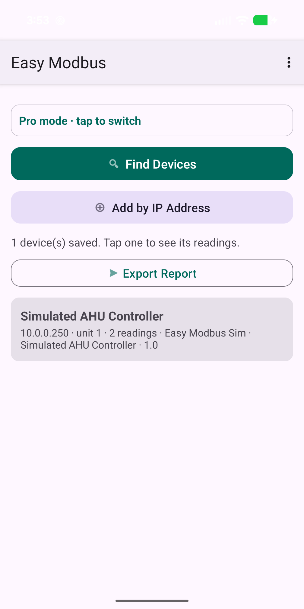
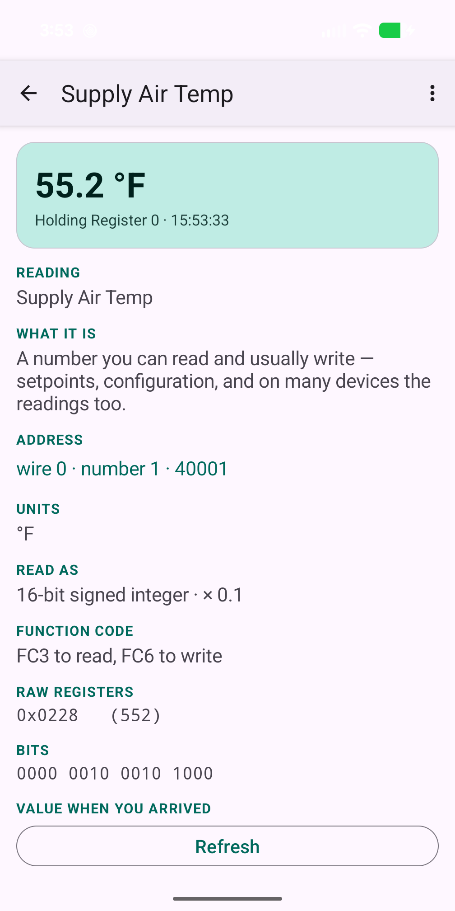
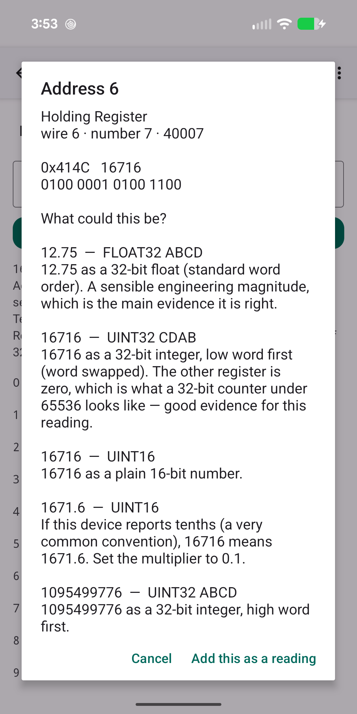

How do I use Easy Modbus to read values from a Modbus device?
Updated 18 September 2026
Connect your phone to the same network as the equipment, open Easy Modbus and either tap Find devices to sweep the network or add the device by typing its IP address. Test the connection, then add a reading: in Easy mode the app asks what kind of value it is — a temperature, a kilowatt figure, an on/off — and picks the data type, scaling and units for you, reads it straight away, and warns you if the answer is not plausible. Name it and it is saved. Once you have the readings you want, Export hands you a CSV with live values.
The thing to understand first
A Modbus device will tell you the contents of register 7 and will never tell you what register 7 is. Unlike BACnet, there is no list to ask for. So most of what Easy Modbus does is help you build that list yourself — and then remember it, so nobody has to work it out twice. See what a Modbus register map is.
Step 1 — Get on the network
Join the building's Wi-Fi or plug the phone into the controls network with a USB-Ethernet adapter. Modbus TCP normally uses port 502; if the equipment has an Ethernet socket that is almost certainly what it speaks. Serial equipment behind a gateway box is covered below.
Step 2 — Find or add the device
- Find devices sweeps your local subnet for anything answering on port 502. The app tells you first that this is a port scan of someone's network, because it is; on a customer site, ask before you tap. A typical /24 takes a few seconds.
- Add by address when you already know the IP, or when the equipment is on another subnet the sweep cannot reach. This is the normal route in practice.
The scan settings have a Thorough scan option. A normal sweep speaks plain Modbus TCP. Some serial gateways open port 502 but only answer Modbus RTU over TCP, so a normal sweep never sees them; with Thorough scan on, any address that accepts the connection but stays silent to the first framing is asked again in the other framing before being written off. It is slower — it roughly doubles the time spent on addresses that open the port without answering — so it is off by default and worth turning on when you know a gateway is out there but the sweep is not finding it.

Then Test connection. The app tries plain Modbus TCP and Modbus RTU-over-TCP and tells you which one answered. This matters because a serial gateway that needs RTU framing looks exactly like a device that is switched off. An error reply counts as success here — an exception from the device proves something is listening. Only silence means absent. See cannot find Modbus devices.
If the device is a gateway with several units behind it, Find unit IDs sweeps a range of unit IDs and offers to add each one that answers. See Modbus unit IDs.
Step 3 — Add a reading (Easy mode)
Open the device and add a reading. Easy mode asks what kind of reading is it? — temperature, humidity, pressure, power, energy, a count, an on/off status — and picks the data type, word order, multiplier and units that are usual for that quantity. You give it the register address, typed however your manual writes it (40007, 4x0007, "register 7", "address 6" all mean the same thing; the app shows you how it read it — see why the address is off by one).
The app reads the register immediately and shows the value. If the answer is not plausible for that kind of quantity — a humidity of 452%, a room at 1,847 degrees — it says so, because that means the scaling or word order is wrong, not the sensor. Adjust and read again. When it looks right, name the reading and it is saved.

That saved reading — address, type, word order, scaling, units, name — is the product. It is the register map the vendor never gave you, built one row at a time, and it is there next visit.
When you do not know what a register is
Switch to Pro mode (in Settings) and open the register browser. Read a block and the app shows each register in hex and decimal alongside its best guesses: "12.75 as a 32-bit float, words swapped", "a counter", "packed text", each with the reasoning. A wrong guess is visibly wrong. See why the value looks wrong.


Step 4 — Read them all, and export
The device's reading list refreshes every saved reading in one tap, grouping neighbouring registers into as few requests as the equipment allows. Export produces a CSV of the whole map with the live values and hands it to your email app; you choose who gets it. If a vendor gives you a CSV register map, Import reads it in rather than making you type forty rows. See a vendor asked for my Modbus information.

Things worth knowing
- Reading cannot change anything. Writing is a separate mode that is off by default — see how to write to a register.
- Nothing leaves the phone except a CSV you export yourself. No account, no server.
- Pro mode changes what you see, not what is sent. The same requests go on the wire either way; Pro just stops hiding the hex, function codes, per-device timeouts and the frame log.